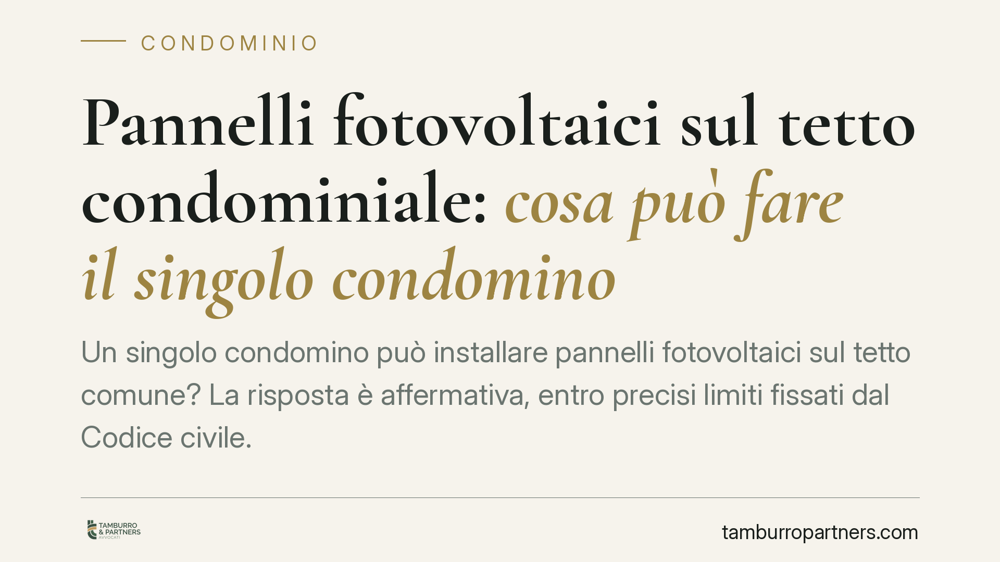

Pannelli fotovoltaici sul tetto condominiale: cosa può fare il singolo condomino
Un singolo condomino può installare pannelli fotovoltaici sul tetto comune? La risposta è affermativa, entro precisi limiti fissati dal Codice civile. L'iniziativa individuale è tutelata, ma non consente di occupare l'intera copertura né di comprimere il diritto degli altri. Quando lo spazio è conteso, la parola passa all'assemblea. Ecco cosa dice la norma e come muoversi.

Il quadro normativo
L'installazione di impianti fotovoltaici su parti comuni è espressamente disciplinata dall'art. 1122-bis del Codice civile, introdotto dalla riforma del condominio del 2012. La norma riconosce al singolo condomino il diritto di installare impianti per la produzione di energia da fonti rinnovabili destinati al servizio della propria unità immobiliare, anche sul lastrico solare, sul tetto o su altre superfici comuni idonee.
È un diritto individuale, ma non illimitato. L'art. 1122-bis c.c. subordina l'intervento al rispetto del decoro architettonico dell'edificio e alla salvaguardia della stabilità e della sicurezza del fabbricato. Il condomino interessato deve inoltre darne comunicazione preventiva all'amministratore, che ne riferisce all'assemblea.
Il limite del pari uso
Il principio cardine è quello dell'art. 1102 c.c.: ciascun condomino può servirsi della cosa comune purché non ne alteri la destinazione e non impedisca agli altri di farne parimenti uso. Tradotto: il tetto è di tutti, e nessuno può appropriarsene per intero.
Un condomino non può quindi occupare l'intera superficie della copertura con il proprio impianto, azzerando la possibilità per gli altri di realizzare analoghe installazioni in futuro. Se la superficie disponibile è sufficiente per tutti, l'iniziativa individuale resta legittima e non richiede autorizzazioni. Il problema sorge quando lo spazio è scarso o conteso.
Quando decide l'assemblea
Se più condomini rivendicano la stessa porzione di tetto, o se la copertura non è capiente per tutte le richieste, la competenza si sposta sull'assemblea. Secondo un orientamento condiviso in dottrina e giurisprudenza, spetta infatti all'organo collegiale ripartire in modo equo gli spazi comuni contesi, contemperando le esigenze dei diversi condomini.
Lo stesso art. 1122-bis c.c., all'ultimo comma, prevede che l'assemblea possa prescrivere adeguate modalità alternative di esecuzione o imporre cautele a salvaguardia della stabilità, della sicurezza e del decoro architettonico, deliberando con la maggioranza rinforzata dell'art. 1136, comma 5, c.c.
È bene precisare il quorum, spesso citato in modo impreciso. L'art. 1136, comma 5, c.c. richiede un numero di voti che rappresenti la maggioranza degli intervenuti in assemblea e, contemporaneamente, almeno i due terzi del valore dell'edificio. Non basta una delle due condizioni: devono ricorrere entrambe.
Cosa cambia per il condomino e per l'amministratore
Per il singolo condomino, l'installazione autonoma è possibile ma non è un salvacondotto: occupare più spazio del necessario, o pregiudicare le future installazioni altrui, espone al rischio di contestazioni e di ordini di rimozione o riduzione.
Per l'amministratore, la comunicazione preventiva del condomino non è una formalità. Serve a verificare per tempo la compatibilità dell'intervento con la sicurezza del fabbricato e con i diritti degli altri, e a portare la questione in assemblea quando lo spazio è conteso.
In presenza di più richieste, una deliberazione assembleare che ripartisca ordinatamente le porzioni di copertura riduce sensibilmente il contenzioso e offre a ciascuno un titolo chiaro per il proprio impianto.
Cosa fare in concreto
- Comunica prima di installare. Invia all'amministratore una comunicazione scritta preventiva, indicando dimensioni, collocazione e caratteristiche tecniche dell'impianto.
- Verifica la capienza del tetto. Fai valutare da un tecnico se la superficie disponibile consente installazioni anche per gli altri condomini: è il presupposto per procedere senza delibera.
- Tutela decoro e sicurezza. Acquisisci una relazione tecnica sulla compatibilità dell'intervento con la stabilità del fabbricato e con il decoro architettonico.
- Porta la questione in assemblea se lo spazio è conteso. Quando più condomini rivendicano la stessa area, chiedi una delibera di ripartizione con il quorum dell'art. 1136, comma 5, c.c.
- Conserva la documentazione. Comunicazioni, relazioni tecniche e verbali assembleari costituiscono la prova della legittimità dell'installazione in caso di future contestazioni.
Consigliamo di affrontare l'installazione con un approccio documentale rigoroso fin dall'inizio: la maggior parte dei conflitti nasce da interventi eseguiti senza comunicazione preventiva e senza verifica preliminare degli spazi.
Ogni condominio ha una storia a sé.
Se gestisci un'amministrazione e vuoi un confronto su una specifica questione condominiale, scrivi allo studio. Ti rispondiamo entro un giorno lavorativo.